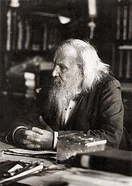

Dmitri Ivánovich Mendeléyev(Nacio en Tobolsk, 27 de 1834 y fallecio en San Petersburgo, 20 de enero de 1907.)
fue un químico ruso, conocido por haber descubierto el patrón subyacente en lo que ahora se conoce como la tabla periódica de los elementos.
Sobre las bases del análisis espectral establecido por los alemanes Robert Bunsen y Gustav Kirchhoff, se ocupó de problemas químico-físicos relacionados con el espectro de emisión de los elementos. Realizó las determinaciones de volúmenes específicos y analizó las condiciones de licuefacción de los gases, así como también el origen de los petróleos.
Su investigación principal fue la que dio origen a la enunciación de la ley periódica de los elementos, base del sistema periódico que lleva su nombre. Tuvo influencia sobre él artículo de 1858 "Sunto di un corso di Filosofia Chimica" de Stanislao Cannizzaro. En 1869 publicó su libro Principios de la química, en el que desarrollaba la teoría de la tabla periódica.
Biografía
Dmitri Ivánovich Mendeléyev era el menor de al menos 17 hermanos de la familia formada por Iván Pávlovich Mendeléyev y María Dmítrievna Mendeléyeva. En el mismo año en que nació, su padre quedó ciego perdiendo así su trabajo, era el director del colegio del pueblo. Uno de los mayores rasgos físicos era su enorme barba la cual según dicen los historiadores solo se afeitaba una vez al año.
Recibían una pensión insuficiente, por lo que la madre tuvo que tomar las riendas de la familia y dirigir la fábrica de cristal que había fundado su abuelo. Desde joven destacó en ciencias en la escuela, no así en ortografía. Un cuñado suyo, exiliado por motivos políticos, y un químico de la fábrica le inculcaron el amor por las ciencias.
La familia sufrió, ya que Dmitri solo terminó el bachillerato, su padre murió y la fábrica de cristal que su madre dirigía, se quemó. Esta apostó por invertir los ahorros en la educación de Dmitri, en vez de reconstruir la fábrica. En esa época, la mayoría de los hermanos, excepto una hermana, ya se habían independizado, y la madre se los llevó a Moscú para que Dmitri pudiese ingresar en la Universidad. Sin embargo, Mendeléyev no fue admitido; su origen siberiano le cerró las puertas de las universidades de Moscú y San Petersburgo, por lo que se formó en el Instituto Pedagógico de esta última ciudad.
En 1862 se casó con Feozva Nikítichna Leschiova con la que tuvo tres hijos, uno de los cuales falleció. Este fue un matrimonio infeliz y desde 1871 vivieron separados. Fue acusado de bígamo, pues una vez divorciado de su esposa volvió a contraer matrimonio, sin esperar los siete años que exigía la legislación rusa.
Encontró la felicidad casándose con Anna Ivánovna Popova, 26 años menor que él. Para lograrlo, Mendeléyev estuvo cuatro años desesperado, incluso llegó a caer en una depresión, debido a que su mujer se negaba a concederle el divorcio y la familia de Anna se oponía tajantemente. A punto de darse por vencido, consiguió el divorcio de su esposa y fue en busca de Anna que se encontraba en Roma. En 1882 contrajeron matrimonio. Tuvieron cuatro hijos, la mayor de los cuales, Liubov, se casaría con el poeta ruso Aleksandr Blok.
Aunque es más conocido en Occidente por haber creado la Tabla periódica de los elementos, la contribución de Dmitri Mendeléyev al desarrollo de Rusia fue muy vasta y por ello es reconocido como una verdadera personalidad del Renacimiento ruso. Sus campos de estudio variaron desde la química hasta la aeronáutica.
Su amplio conocimiento lo llevó a convertirse en una figura influyente entre sus contemporáneos, fue asesor del ministro de Hacienda de Rusia, Serguéi Witte, y escribió más de 70 artículos sobre el desarrollo económico y social del país.
Mendeléyev fue uno de los más grandes maestros de su tiempo y se le atribuye el mérito de haber educado a miles de estudiantes. Falleció el 2 de febrero de 1907, casi ciego. Se considera a Mendeléyev un genio, no solo por el ingenio que mostró para aplicar todo lo conocido y predecir lo no conocido sobre los elementos químicos y plasmarlo en la tabla periódica, sino por los numerosos trabajos realizados a lo largo de toda su vida en diversos campos de la ciencia, agricultura, ganadería, industria y petróleo.
Carrera académica
Presentó la tesis Sobre volúmenes específicos para conseguir la plaza de maestro de escuela, y la tesis Sobre la estructura de las combinaciones silíceas para alcanzar la plaza de cátedra de química en la Universidad de San Petersburgo. A los 23 años era ya encargado de un curso de dicha universidad.
Gracias a una beca, pudo ir a Heidelberg, donde realizó diferentes investigaciones junto a Gustav Kirchhoff y Robert Bunsen, y publicó un artículo sobre "La cohesión de algunos líquidos y sobre el papel de la cohesión molecular en las reacciones químicas de los cuerpos”. Este trabajo lo pudo realizar gracias a unos aparatos de precisión encargados en París con los cuales encontró la temperatura absoluta de ebullición, y descubrió por qué algunos gases no se podían licuar (porque se encontraban por encima de la temperatura de ebullición).
Participó en el congreso de Karlsruhe donde quedó impresionado por las ideas sobre el peso de los elementos que planteó Cannizzaro. Al volver a San Petersburgo se encontró sin trabajo fijo, lo que le dio tiempo para escribir diferentes obras. Entre las cuales destaca su libro Química orgánica, que escribió influido por lo que había escuchado en Karlsruhe.
Sobre la personalidad de Mendeléyev se puede decir que era un adicto al trabajo y su fama de mal carácter estaba basada en que mientras trabajaba, gritaba, gruñía y refunfuñaba. Se dice que alguien le preguntó sobre su mal genio, a lo que contestó que era una manera de mantenerse sano y no contraer úlcera.
En 1864 fue nombrado profesor de tecnología y química del Instituto Técnico de San Petersburgo. En 1867, ocupó la cátedra de química en la Universidad de San Petersburgo, donde estudió el isomorfismo, la compresión de los gases y las propiedades del aire enrarecido.
Permanecería en esta cátedra 23 años. Mendeléyev estaba a favor de la introducción de reformas en el sistema educativo ruso. No consiguió ser elegido presidente de la academia imperial de ciencias, debido a su liberalismo.
En 1890, terminó su estancia en la universidad, debido a que intercedió por los estudiantes, y entregó a Iván Deliánov, ministro de Instrucción Pública, una carta dirigida al zar Alejandro III de Rusia. El ministro se la devolvió con una nota adjunta que decía:
Indignado, Dmitri dejó las aulas de la universidad. Quizá por esto, se mantuvo desde entonces al margen de la política y del Estado, aunque manifestaba sus ideas liberales y su oposición a la opresión.
En 1865, tras la liberación de los siervos producida en 1861, decidió comprar una granja en la que puso en práctica métodos científicos para la mejora de la cosecha y tuvo una relación humanitaria con los campesinos. Obtuvo un rendimiento muy por encima de lo que se producía antes, por lo que muchos campesinos de granjas cercanas fueron a pedir su consejo.
En 1869, publicó la más importante de sus obras, Principios de química, donde formulaba su famosa tabla periódica, traducida a multitud de lenguas y que fue libro de texto durante muchos años. Fue defensor de la ciencia aplicada y de los estudios para mejorar las técnicas de producción industrial en numerosos ámbitos. Contribuyó a la construcción de la primera refinería petrolera de Rusia, planteó las primeras teorías sobre el origen del petróleo y llegó a pronosticar que este recurso se convertirá en un componente clave de la economía mundial. En 1863, fue el primero en sugerir la idea de utilizar tuberías para el transporte de combustible. Impulsó la importancia del petróleo como materia prima para la petroquímica. Se le atribuye la afirmación de que la quema de petróleo como combusstible sería similar a prender una estufa de cocina con los billetes de banco.
Tabla periódica

El sistema periódico es la clasificación de todos los elementos químicos, naturales o creados artificialmente. A medida que se perfeccionaron los métodos de búsqueda, el número de elementos químicos conocidos fue creciendo sin cesar y surgió la necesidad de ordenarlos de alguna manera. Se realizaron varios intentos, pero el intento decisivo lo realizó Mendeléyev, que creó lo que hoy se denomina sistema periódico.
Mendeléyev ordenó los elementos según su masa atómica, situando en una misma columna los que tuvieran algo en común. Al ordenarlos, se dejó llevar por dos grandes intuiciones; alteró el orden de masas cuando era necesario para ordenarlos según sus propiedades y se atrevió a dejar huecos, postulando la existencia de elementos desconocidos hasta ese momento.
Dmitri Mendeléyev publicó su tabla periódica con todos los elementos conocidos y predijo varios de los nuevos elementos para completar la tabla. Solo unos meses después, Meyer publicó una tabla prácticamente idéntica. Algunos consideran a Meyer y Dmitri Mendeléyev los cocreadores de la tabla periódica. Este último logró predecir con precisión las cualidades de lo que llamó eka-silicio, eka-aluminio y eka-boro (germanio, galio y escandio, respectivamente).
Con todo, su principal logro investigador fue el establecimiento del llamado sistema periódico de los elementos químicos, o tabla periódica, gracias al cual culminó una clasificación definitiva de los citados elementos (1869) y abrió el paso a los grandes avances experimentados por la química en el siglo XX.
Aunque su sistema de clasificación no era el primero que se basaba en propiedades de los elementos químicos, como su valencia, sí incorporaba notables mejoras, como la combinación de los pesos atómicos y las semejanzas entre elementos, o el hecho de reservar espacios en blanco correspondientes a elementos aún no descubiertos como el eka-aluminio o galio (descubierto por Boisbaudran, en 1875), el eka-boro o escandio (Nilson, 1879) y el eka-silicio o germanio (Winkler, 1886).
Actualmente se emplea el formato de la tabla elaborada por Werner, con los lantánidos y actínidos en columnas propias.